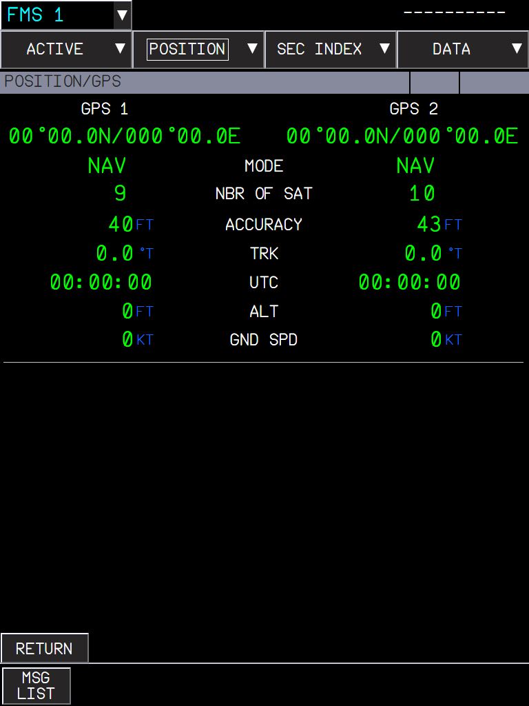

Real GPS receivers in MMR 1 and 2 for both aircraft, with the GPIRS position, GPS PRIMARY from the real accuracy, the GPS pages, the NAV GPS FAULT alerts, GPS deselection and the A32NX ECAM STATUS page
AircraftA32NX and A380X (shared systems code); the ECAM STATUS page and STS reminder are A32NX onlyWhere to find itMCDU DATA > GPS MONITOR and SELECTED NAVAIDS (A32NX); MFD FMS > POSITION > GPS and NAVAIDS (A380X); E/WD and SD STATUS page; flyPad > Failures > ATA 34 NavigationBranchcore/gps, based on core/a380x-mfd-fms (stacked: needs core/surveillance and core/a380x-mfd-fms merged first). core/a32nx-air-conditioning, core/a380x-elec and core/failures-a32nx build on it.StatusAll six features tested in the sim by the user: OK (2026-10-02): receivers and pages, A380X DIFF mode, GPS deselection on both aircraft, NAV GPS FAULT alerts, A32NX STATUS page and STS reminder, A380X INOP SYS (on the develop build). Not sim-tested on this branch: the A32NX STS reminder, adapted here to the FlyByWire master CLR logic. A full MSFS restart is needed after installing (systems WASM).PicturesOne picture: the A380X POSITION/GPS page layout, taken in the browser harness before the receivers existed (the values on it are the old stand-in values). The other displays are text only.
1. GPS receivers in MMR 1 and 2
2. GPIRS position and GPS PRIMARY
3. GPS pages: MCDU GPS MONITOR and MFD POSITION/GPS
4. NAV GPS 1(2) FAULT alerts
5. GPS deselection and position uncertainty
6. A32NX ECAM STATUS page and STS reminder
1. GPS receivers in MMR 1 and 2
Aircraft: A32NX and A380X | Where: No control: the receivers run when powered | Status: Tested in the sim by the user: OK (2026-10-02). Degraded modes also covered by 21 Rust unit tests.
What it is for
There was no GPS receiver in either aircraft: the pages showed the sim GPS position for both receivers with random satellite counts and figures of merit, and GPS PRIMARY came from a random estimate. Now each Multi-Mode Receiver (MMR 1 and MMR 2) has a GPS receiver. A320 FCOM DSC-34: "Worldwide, 24 satellites broadcast accurate navigation data"; the two independent receivers process them and send their data to the ADIRUs.
Satellites: the sim has none, so they are computed from the nominal 24-slot GPS constellation (six orbital planes, four satellites each) at the sim UTC date and time. A satellite counts when it is more than 5° above the horizon. Their geometry gives the dilution of precision, and from it the figure of merit (accuracy) and the integrity limit (HIL) of the position. Fewer than 5 satellites: no integrity limit.
Modes (A320 FCOM DSC-22_20 GPS MONITOR, A380 FCOM DSC-34-10-40-10): TEST (self test at power up, 1.5 to 2.5 s), INIT (2.5 to 4.5 s), ACQ (satellite acquisition), NAV (4 or more satellites, data to the ADIRUs), FAULT (failed receiver).
Acquisition time: 15 to 30 s after a short power cut (unpowered 15 min or less: warm start), 80 to 130 s from a cold start, 5 to 15 s to re-acquire after a loss of the signals.
Degraded modes (the FCOMs only name them; the behaviour follows ARINC 743A, a design choice): ALTAID with 3 satellites (the ADR barometric altitude is the fourth measurement, no integrity limit); AIDED with fewer satellites, the receiver coasts on the IR velocities for up to 2 min, its accuracy gets worse with time and it gives no integrity limit. After that: back to ACQ.
Antenna masking: the antenna is on top of the fuselage. In a turn or a steep climb, satellites low on the far side of the aircraft are masked.
DIFF (A380X only): the A380 receivers use satellite based augmentation. In NAV inside a WAAS (North America), EGNOS (Europe), MSAS (Japan) or GAGAN (India) service area, the mode shows DIFF and the position is several times more accurate. The service areas are coarse latitude/longitude boxes (design choice).
Power: the FCOM gives none. GPS 1 is on AC ESS and GPS 2 on AC 2, as the other side 1 / side 2 navigation receivers (design choice). On the A380X the bus named AC ESS in the code is the AC EMER busbar.
Failures: flyPad > Failures > ATA 34 Navigation > GPS 1 and GPS 2 put the receiver in FAULT.
Limitations and why
Limitation
Why
What to do
The satellite positions are the nominal constellation, not the real satellites of the day.
No almanac file is used: the 24 nominal slots give a realistic count and geometry anywhere in the world.
None needed.
ALTAID and AIDED are rarely seen in flight.
With 24 satellites, 4 or more are almost always in view; masking in a steep turn seldom leaves fewer.
Covered by the Rust unit tests.
A full MSFS restart is needed after installing.
The receivers are in the systems WASM module.
Restart the sim.
How to use
Nothing to set: power the aircraft and the receivers start (TEST, INIT, ACQ, then NAV).
Watch them on the A32NX MCDU DATA > GPS MONITOR page or the A380X MFD FMS > POSITION > GPS page (see "GPS pages" below).
How to test
#
Do this
Expected result
1
Cold and dark (aircraft unpowered more than 15 min). Power the aircraft (batteries, external power or APU) and open the GPS page at once.
Both receivers show TEST briefly, then INIT, then ACQ with a rising number of satellites; NAV after about 80 to 130 s.
2
Remove the power for less than 15 min, then power again.
ACQ lasts only 15 to 30 s (warm start).
3
In NAV, read the satellites and the figure of merit.
Between 4 and 12 satellites (7 to 10 on average) and a merit of about 30 to 100 ft; the two receivers slightly different.
4
A380X in Europe or North America (for example EGLL or KJFK): open POSITION / GPS.
MODE shows DIFF on both receivers.
5
A380X outside the service areas (for example SBGR, FAOR or YSSY).
MODE shows NAV.
6
flyPad > Failures > ATA 34 Navigation > GPS 1.
GPS 1 shows FAULT, its data dashed; GPS 2 unchanged. Clear the failure: GPS 1 goes back through ACQ to NAV.
2. GPIRS position and GPS PRIMARY
Aircraft: A32NX and A380X | Where: MCDU PROG page (A32NX); MFD POSITION / MONITOR (A380X); ND messages | Status: Tested in the sim by the user: OK (2026-10-02).
What it is for
Each IR of the ADIRUs now mixes its inertial position with the position of one GPS receiver: the GPIRS position. The selection follows A320 FCOM DSC-22_20: IR 1 uses GPS 1, IR 2 uses GPS 2, IR 3 uses GPS 1 (GPS 2 with the ATT HDG selector on F/O 3). If one receiver is rejected, all the IRs use the other one. The same rule is used on the A380X (design choice: the A380 FCOM does not give it).
The FMS (the same code in the A32NX FMGC and the A380X FMC) uses the onside GPIRS, else GPIRS 3, else the offside one (A380 FCOM DSC-22-FMS-10-30-10). Its estimated position uncertainty (EPU) is the GPIRS figure of merit. Accuracy is HIGH when the EPU is within the required navigation performance (RNP), and GPS PRIMARY needs accuracy HIGH and the integrity limit within the RNP. Before, a random estimate gave GPS PRIMARY.
No GPIRS position: no GPS PRIMARY; the FMS uses radio or IRS positions.
GPS 1 failed
IR 1 and IR 3 switch to GPS 2: GPS PRIMARY stays.
Both GPS failed
GPS PRIMARY is lost: the FMS shows GPS PRIMARY LOST.
How to use
Align the IRs as usual. GPS PRIMARY comes once the IRs are in NAV and the receivers are in NAV.
Check GPS PRIMARY on the A32NX MCDU PROG page or the A380X MFD POSITION / MONITOR page before an RNAV procedure.
How to test
#
Do this
Expected result
1
Cold and dark, power the aircraft and start the IR alignment. Open the A32NX PROG page (or the A380X POSITION / MONITOR page).
No GPS PRIMARY until the IRs are aligned and the receivers in NAV.
2
Wait for the end of the alignment.
GPS PRIMARY appears (green on the A32NX PROG page).
3
flyPad > Failures > ATA 34 Navigation > GPS 1.
GPS PRIMARY stays (the IRs use GPS 2).
4
Also fail GPS 2.
GPS PRIMARY disappears; GPS PRIMARY LOST is shown. Clear both failures: GPS PRIMARY comes back once a receiver is in NAV again.
3. GPS pages: MCDU GPS MONITOR and MFD POSITION/GPS
Aircraft: A32NX (MCDU), A380X (MFD) | Where: A32NX MCDU DATA > GPS MONITOR; A380X MFD FMS > POSITION > GPS | Status: Tested in the sim by the user: OK (2026-10-02).
What it is for
Both pages showed the sim GPS solution for both receivers with random satellite counts and figures of merit. They now show the data of each receiver.
A32NX MCDU GPS MONITOR
Per receiver (A320 FCOM DSC-22_20-50-10-28): GPS1(2) POSITION, TTRK (true track, in degrees: the old page showed the magnetic track in radians), GS, UTC, MERIT (figure of merit, FT), MODE/SAT (mode and number of satellites), GPS ALT. The data is dashed while the receiver is not in NAV (or ALTAID / AIDED), and for a receiver that no ADIRU has selected ("the data of the GPS that is not selected is dashed").
A380X MFD POSITION/GPS
Per receiver (A380 FCOM DSC-22-FMS-20-30): position, MODE (TEST, INIT, ACQ, NAV, ALTAID, AIDED, DIFF, FAULT), NBR OF SAT (while acquiring and navigating), ACCURACY (HFOM, in FT as on the FCOM figure), TRK, UTC, ALT and GND SPD. Dashes while the receiver does not compute a position.

Figure 1. MFD POSITION/GPS: the page layout (picture from the browser harness, taken before the receivers existed: the values are the old stand-in values).
How to use
A32NX: MCDU DATA key > GPS MONITOR.
A380X: MFD FMS > POSITION menu > GPS.
How to test
#
Do this
Expected result
1
A32NX, powered, receivers in NAV: MCDU DATA > GPS MONITOR.
Two receivers with their own position, TTRK in degrees (same as the true track), GS, MERIT in FT and MODE/SAT such as NAV/9.
GPS1 line: MODE/SAT shows FAULT, position, TTRK, GS, MERIT and GPS ALT dashed.
3
A380X, powered: MFD FMS > POSITION > GPS.
GPS 1 and GPS 2 columns with their own values; MODE NAV or DIFF.
4
Fail GPS 2.
GPS 2 column: MODE FAULT, data dashed, UTC --:--:--.
4. NAV GPS 1(2) FAULT alerts
Aircraft: A32NX and A380X | Where: E/WD; SD STATUS page | Status: Tested in the sim by the user: OK (2026-10-02).
What it is for
There was no GPS alert. A failed receiver (mode FAULT) now raises the FCOM alert:
A32NX:NAV GPS 1 FAULT / NAV GPS 2 FAULT (FCOM PRO-ABN-NAV: "GPS 1(2) is failed"), amber caution, no procedure line. Flight phase inhibition as the radio altimeter faults (design choice). STATUS: INOP SYS GPS 1(2); with both: INOP SYS GPS 1+2 and the information FLS LIMITED TO F-APP + RAW (see "A32NX ECAM STATUS page").
A380X:NAV GPS 1 FAULT, NAV GPS 2 FAULT or NAV GPS 1+2 FAULT, crew awareness (the A380 FCOM gives no procedure), inhibited as the ADR faults (design choice). STATUS (FCOM PRO-ABN-ECAM-10-34-10): INOP SYS GPS 1, GPS 2 or GPS 1+2; with both also BTV and ROW/ROP in APPR & LDG.
How to use
Read the alert on the E/WD and clear it with CLR.
Check the inoperative systems on the SD STATUS page (STS key).
How to test
#
Do this
Expected result
1
A32NX on the ground, engines off or at idle (not during the takeoff run). flyPad > Failures > ATA 34 Navigation > GPS 1.
E/WD: NAV GPS 1 FAULT in amber, MASTER CAUT.
2
Press CLR, then open the SD STATUS page.
INOP SYS: GPS 1.
3
Also fail GPS 2.
NAV GPS 2 FAULT; STATUS: INOP SYS GPS 1+2, and FLS LIMITED TO F-APP + RAW in green.
4
A380X on the ground: fail GPS 1.
E/WD: NAV GPS 1 FAULT. SD STATUS: INOP SYS GPS 1.
5
Also fail GPS 2.
The alert becomes NAV GPS 1+2 FAULT. STATUS: INOP SYS GPS 1+2; APPR & LDG: BTV, ROW/ROP.
5. GPS deselection and position uncertainty
Aircraft: A32NX and A380X | Where: A32NX MCDU SELECTED NAVAIDS; A380X MFD POSITION > NAVAIDS | Status: Tested in the sim by the user: OK on both aircraft (2026-10-02).
What it is for
The crew can tell the FMS not to use the GPS (for example when told GPS is unreliable in an area). The A32NX DESELECT key was inoperative and the A380X had no GPS option. Now:
A32NX SELECTED NAVAIDS page, key [6L] (A320 FCOM DSC-22_20-50-10-28): GPS SELECTED / DESELECTED in blue small font, the action ({DESELECT or {SELECT) in white.
A380X POSITION / NAVAIDS page: GPS SELECTED / DESELECTED radio buttons (A380 FCOM DSC-22-FMS-20-30).
With the GPS deselected the GPIRS position is no longer used: the FMS goes to IRS/DME/DME, IRS/VOR/DME or IRS only, and GPS PRIMARY is lost.
The deselection is reset at the end of the flight (DONE phase).
GPS IS DESELECTED (A32NX, white MCDU message) / GPS DESELECTED (A380X, white MFD message) when the GPS is deselected and the aircraft is less than 80 NM from the top of descent, or in the approach phase. The message is removed when the GPS is selected again.
Position uncertainty without GPS (A320 FCOM DSC-22_20-20-20 table): IRS/DME/DME 0.27 to 0.37 NM, IRS/VOR/DME 0.30 to 0.42 NM (growing with the distance to the navaids, up to 100 NM: design choice), IRS only growing from its starting value at 6 NM/h for 40 min, 0 for 50 min, 4 NM/h for 40 min, 0 for 45 min, then 2 NM/h; 5 NM after an IRS alignment.
Limitations and why
Limitation
Why
What to do
The 0.2 NM reset of the uncertainty at takeoff is not done.
Not part of this change.
None.
How to use
A32NX: MCDU DATA > POSITION MONITOR > NAVAIDS> [6R] > press [6L] {DESELECT. Press [6L] {SELECT to use the GPS again.
A32NX, IRs aligned, GPS PRIMARY on the PROG page. MCDU DATA > POSITION MONITOR > NAVAIDS> [6R].
Line 6 left: GPS SELECTED in blue small font, {DESELECT in white.
2
Press [6L].
GPS DESELECTED, {SELECT. The PROG page loses GPS PRIMARY; the EPU becomes a radio or IRS only value (for example 0.27 to 0.42 NM near DMEs).
3
Type something in the scratchpad, then press [6L].
NOT ALLOWED; the selection does not change.
4
In flight with a flight plan, GPS deselected, fly to less than 80 NM from the T/D.
White MCDU message GPS IS DESELECTED.
5
Press [6L] {SELECT.
The message is removed; GPS PRIMARY comes back.
6
A380X: MFD FMS > POSITION > NAVAIDS, GPS: DESELECTED.
POSITION / MONITOR no longer shows GPS PRIMARY. Near the T/D (80 NM) or in approach: MFD message GPS DESELECTED.
7
Finish the flight (DONE phase).
The GPS is selected again.
6. A32NX ECAM STATUS page and STS reminder
Aircraft: A32NX | Where: SD STATUS page (STS key on the ECAM control panel); bottom of the E/WD | Status: Tested in the sim by the user on develop: OK (2026-10-02). On this branch the STS reminder logic was adapted to the CLR logic of FlyByWire master (develop's version sits on a fork-only commit): that adaptation is not sim-tested.
What it is for
The A32NX STATUS page was a frame that always showed NORMAL. The FWC now fills it (A320 FCOM DSC-31-20 and DSC-31-25-20):
Left column: the information lines in green (the limitations in blue are added by core/a32nx-air-conditioning). Right column: INOP SYS (white, underlined) and the inoperative systems in amber. An empty page shows NORMAL in green.
The page appears by itself when it is not empty and the crew clears the last alert of the E/WD with CLR, or selects CONF 1 for the approach (flaps lever 0 to 1 in flight). The next CLR (or STS) push removes it.
STS reminder: STS in white, framed, at the bottom of the E/WD, while the STATUS page is not empty and not shown and no alert is shown.
On this branch only the GPS alerts fill it (INOP SYS GPS 1, GPS 2, GPS 1+2; FLS LIMITED TO F-APP + RAW). Other branches add their alerts.
How to use
After clearing the alerts with CLR, read the STATUS page that comes up, then press CLR to remove it.
When STS shows at the bottom of the E/WD, press STS to review the status.